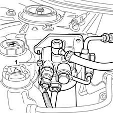
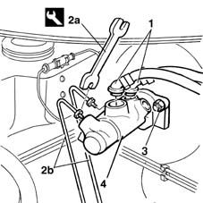

3330C12 (PUMP) - MASTER CYLINDER R.R. for right hand drive versions
- Path
- Procedures > 33 BRAKING SYSTEM > 3330 HYDRAULIC BRAKING SYSTEM > 3330C brake pump, reservoir and load proportioning valve > 3330C12 (PUMP) - MASTER CYLINDER R.R. for right hand drive versions
- Kind
- repair procedure (removal / refitting; the operation number is the code)
- Applies to
- all engines; all production periods
- Interactive page
- https://sloeber94.github.io/elrnDB-fMltpl/en/#/2891617
Applies to: all engines; all production periods; only with equipment: Right hand drive
 Removing
Removing
 Refitting
RefittingDisconnect the battery negative terminal.
Applies to: engines: 1.9 JTD 8V; all production periods; only with equipment: Right hand drive
Applies to: all engines; all production periods; only with equipment: Right hand drive
Open the brake fluid reservoir cap.
Using a syringe, remove the brake fluid from the reservoir.
Applies to: engines: 1.9 JTD 8V; all production periods; only with equipment: Right hand drive
1008C10 power unit upper reaction link r r
1008C16 body link bracket - r r
1. Undo the nut fixing the diesel filter and move it aside complete with pipes and bracket underneath.

Applies to: all engines; all production periods; only with equipment: Right hand drive
1. Disconnect the reservoir flexible supply and return pipes which are a press fit on the master cylinder.
2. Using a spanner (2a), undo the connectors (2b) for the rigid pipes from the master cylinder.
3. Undo the nuts fixing the master cylinder to the brake servo.
4. Remove the master cylinder.
 | Name | Country |
|---|---|---|
2a | Box wrench for brake fittings | 1.856.132.000 |

Applies to: all engines; all production periods; only with equipment: Right hand drive
Refitting
RemovingPositin the master cylinder on the brake servo.
Tighten the nuts fixing the master cylinder to the brake servo.
Connect the rigid pipes to the master cylinder and, using a special spanner, tighten the connectors.
| Name | Country |
|---|---|---|
- | Box wrench for brake fittings | 1.856.132.000 |
Connect the reservoir flexible supply and return pipes which are a press fit on the master cylinder.
Applies to: engines: 1.9 JTD 8V; all production periods; only with equipment: Right hand drive
Position the diesel filter complete with bracket and tighten the nut fastening it to the bodyshell.
Applies to: all engines; all production periods; only with equipment: Right hand drive
Applies to: engines: 1.9 JTD 8V; all production periods; only with equipment: Right hand drive
Applies to: all engines; all production periods; only with equipment: Right hand drive
Connect the battery negative terminal.
Topics linked from this page (4)
- 1008C10 power unit upper reaction link r r
- 1008C16 body link bracket - r r
- 1016A10 sound-proofing cover - r + r
- 3330A14 HYDRAULIC BRAKING SYSTEM - Bleed air